48.2.1. How to add the Flow Forming Operation
48.2.4. Objects selection for setup
48.2.5.1. Defining Workpiece 2D cross-section
48.2.5.4. Defining Workpiece BCC
48.2.6. Defining Mandrel Object
48.2.6.1. Defining Mandrel 2D Cross-section
48.2.6.2. Generating Mandrel 3D Geometry
48.2.6.3. Generating Mandrel Mesh
48.2.6.4. Defining Mandrel Material
48.2.6.5. Generating Mandrel BCC
48.2.6.6. Reference point setup for Mandrel
48.2.7.1. Defining Roll Geometry, Mesh, Material and BCC
48.2.7.2. Roll Orientation Page
48.2.9.1. Automatic Positioning
48.2.9.2. Advanced Object Positioning
Spinning operation is used to setup the Flow Forming operation. Flow Forming operation can be setup in Integrated Manufacturing Process environment that can be accessed from GUI Main. Create a new problem by either selecting File  New Problem or by clicking the New Problem
New Problem or by clicking the New Problem  icon. Select 3D Spinning radio button under problem type and unit system. Click on
icon. Select 3D Spinning radio button under problem type and unit system. Click on  button (As shown in Fig. 48.2.1.). Integrated Manufacturing Process template will open, we can see that 3D Spinning operation
is added in Operation editor.
button (As shown in Fig. 48.2.1.). Integrated Manufacturing Process template will open, we can see that 3D Spinning operation
is added in Operation editor.
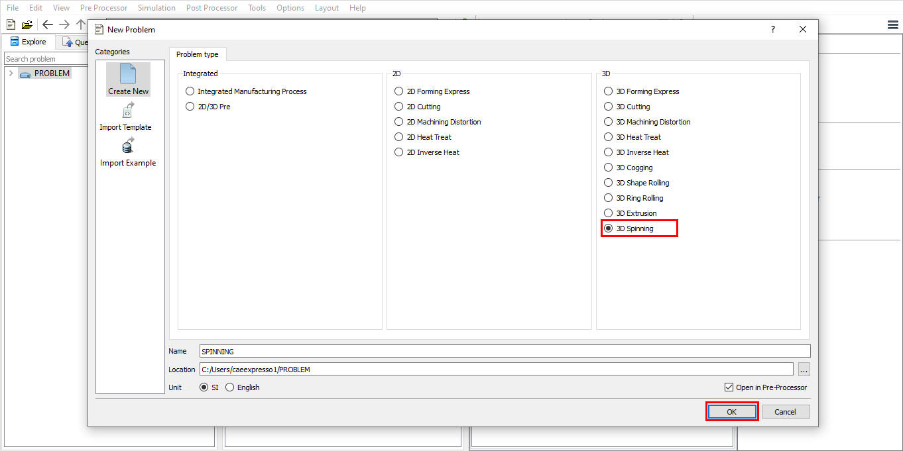
Adding Spinning Operation from GUI Main
We can also setup Flow Forming operation by adding Spinning operation into Integrated Manufacturing Process environment from the New Project pop-up when a new problem is opened in Integrated Manufacturing Process environment as shown in Fig. 48.2.2. Using “Copy Existing project” option, we can import previous saved projects as new project from the New Project pop-up.
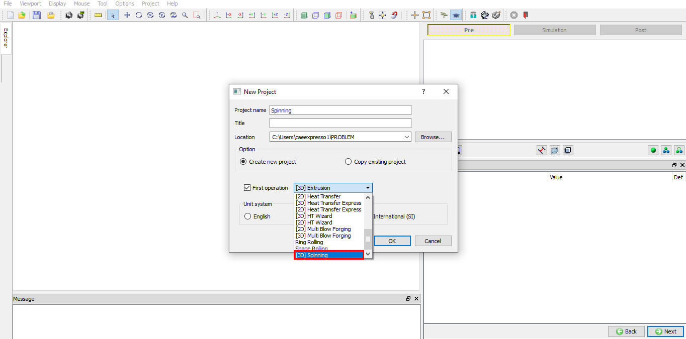
Assign Project name and First Operation selection in New Project window
We can setup Flow Forming operation by adding Spinning operation to operation editor from explorer tab in Integrated Manufacturing Process environment, by clicking on  button next to Spinning operation (as shown in Fig. 48.2.3.) or by drag and
drop Spinning operation into operation editor window. As the Spinning operation is added into operation editor, If the current Screen upward direction is "Z" direction then we will get "Change screen upward axis" popup as shown
in Fig. 48.2.3. Click in "Change screen upward axis" popup.
button next to Spinning operation (as shown in Fig. 48.2.3.) or by drag and
drop Spinning operation into operation editor window. As the Spinning operation is added into operation editor, If the current Screen upward direction is "Z" direction then we will get "Change screen upward axis" popup as shown
in Fig. 48.2.3. Click in "Change screen upward axis" popup.
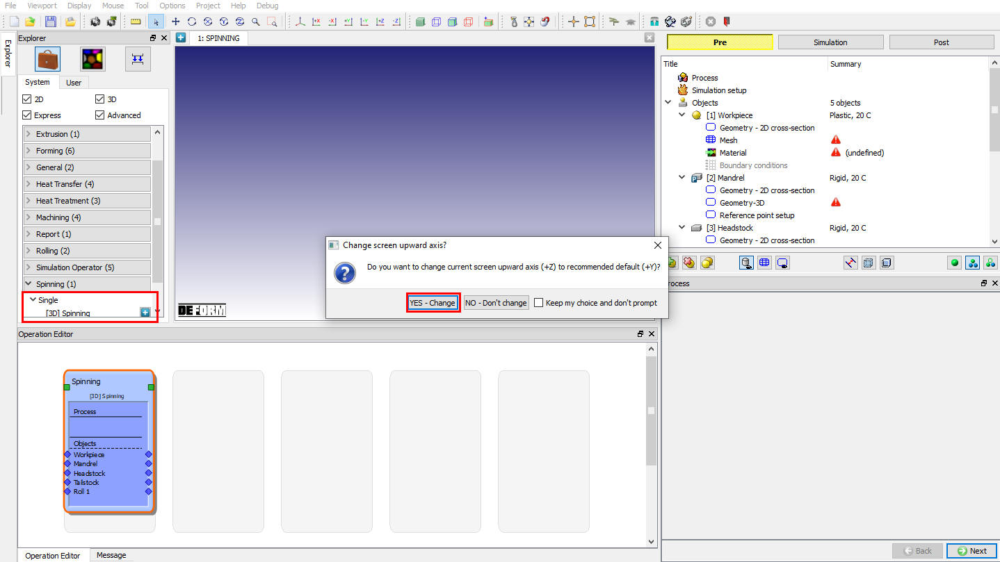
Adding operation from Explorer Operation list - Screen upward direction popup
Now the Process selection page will be opened in property settings modification window as shown in Fig. 48.2.4.
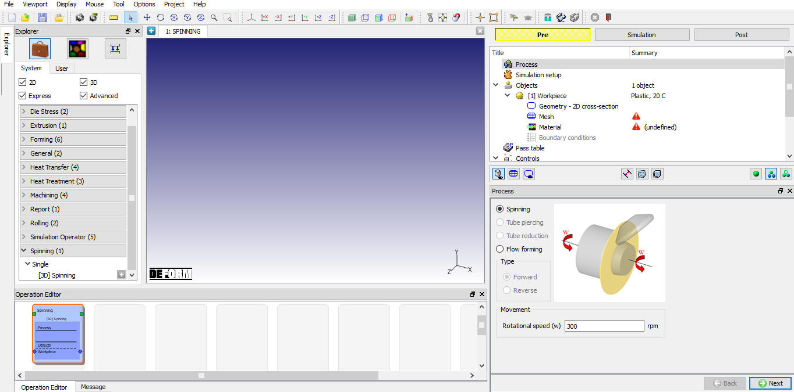
Adding operation from Explorer Operation list
In the process page select “Flow forming” operation. We can define the shaft rotational speed (w) in process page as shown in the Fig. 48.2.5.
Rotation speed (w): The user can define the speed mandrel which will be applied to tail stock and head stock if used.
User can setup both “Forward” and “Reverse” type of Flow Forming operations can be set up using the template. Depending on the process type user can select respective operation.
Forward type: The rolls and the drawn material move in the same axial direction.
Reverse type: The rolls and the drawn material move in opposite axial direction.
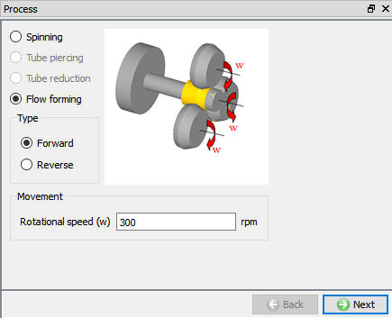
Flow Forming Process Page
The user can select the solution method (ALE or Lagrangian), solver (Implicit or Explicit) and thermal calculations as shown in the Fig. 48.2.6.
Thermal Calculations: In thermal calculations tab (see Fig. 48.2.6.) we have options to select the object types on which thermal calculations need to be performed. User has options to select Calculations in workpiece alone or even in rolls in case of non-isothermal. User may turn off thermal calculations by selecting constant temperature in case of isothermal models.
Target Volume: When we turned on Active in FEM check box, Target volume for Workpiece with "Active in FEM" method will be assigned for Workpiece.
Express :User can select ALE express solver to accelerate the simulation speed of ALE spinning simulation. When this solver is selected the roll must have hole at the center and Non separable criteria must be defined between Head stock/Tail stock and workpiece.
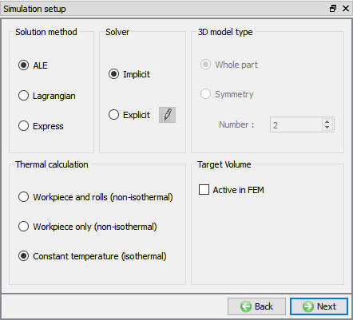
Simulation Setup page
Flow forming setup behavior based on solution and solver selection is explained in below table,
|
Object |
ALE+Implicit |
ALE+ Explicit |
Lagrangian + Implicit |
Lagrangian + Explicit |
|
Workpiece Object type |
Rigid Plastic |
Elasto Plastic |
Rigid Plastic |
Elasto Plastic |
|
Iteration method |
MUMPS+ Direct iteration |
Explicit + N-R |
MUMPS + Direct Iteration |
Explicit + N-R |
|
Workpiece Mesh |
Non-uniform mesh in hoop direction (Fine mesh at contact) Uniform mesh preferred for Explicit |
Uniform mesh in hoop direction |
||
|
Workpiece Movement |
No movement is assigned to workpiece |
|||
|
Mesh is not updated in hoop direction in ALE hence no rotation of object is observed |
Lagrangian simulation shows actual rotation of workpiece. Workpiece movement is achieved by imposing sticking BCC at interface with mandrel and Head stock. |
|||
|
Mandrel/ Tailstock Headstock/ Rolls Object type |
Rigid |
|||
|
Mandrel/ Tailstock Headstock Movement |
Only “Rotation 1” type angular motion is defined about the objects center axis |
|||
|
Rolls Movement |
“Rotation 1” type angular motion or Torque is defined about the objects center axis |
|||
|
Interface |
Interface with sticking BCC at interface of “’Workpiece/mandrel” and “Workpiece/ head stock”. |
|||
|
“Lite contact search” will be used when friction window is detected. |
“Lite contact search” will be used when friction window is detected. |
|||
The user can select the objects to be used in the setup from the available object types as shown in the Fig. 48.2.7. User can select the “Number of rolls” as used in the setup. If the rolls are more than 1 then angle between them in counter-clock direction can be define in the table below “Number of rolls” field as shown in Fig. 48.2.7.
Note: User can define maximum of 3 Rolls in “Number of rolls” field.
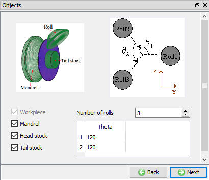
Objects Page (Spinning setup)
The user can define the Workpiece name, temperature and Object type as shown in the Fig. 48.2.8. Depending on the solver selection in Simulation setup
user need to select the object type. Plastic object type for Implicit solver and Elasto-plastic object type for Explicit solve. User can import objects from other databases or key files using  and
and  options or save the object data using
options or save the object data using  and
and  options.
options.
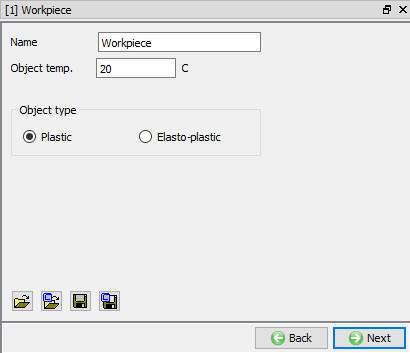
Workpiece object page
The user can define the 2D Cross section of the workpiece using the  or option. Center and Axis of the geometry
is defined in “2D cross-section info” as shown in the Fig. 48.2.9. User can import 2D Cross-section from other databases or key files using
or option. Center and Axis of the geometry
is defined in “2D cross-section info” as shown in the Fig. 48.2.9. User can import 2D Cross-section from other databases or key files using  and
and  options or save the 2D Cross-section data using
options or save the 2D Cross-section data using  and
and  options.
options.
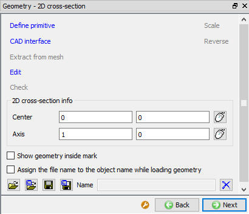
2D Geometry page
Flow forming setup uses brick mesh as initial mesh generation method for both Lagrangian and ALE. If brick mesh generation has any issues in Lagrangian type of simulation, then tetrahedral mesh will be used during remeshing. User can generate the cross-section mesh for defined settings by clicking on label and 3D mesh with defined settings can be generated by clicking on , see Fig. 48.2.10.
Number of Elements: User can define number of elements to be used in cross-section mesh here, see Fig. 48.2.10. System generated Cross-section mesh when user clicks on label which will be rotated to generate 3D Mesh.
Number of Revolved sections: The user can generate the 3D mesh by defining the number of revolved sections along the hoop direction and click on , see Fig. 48.2.10.
Uniform thickness of layers in hoop direction: When this option is used then 3D mesh is generated with layers of uniform thickness along the hoop direction, see Fig. 48.2.10. This option is preferred for “Explicit” type of simulation setup.
Finer mesh in contact region: User can generate finer mesh at contact region by specifying the angle in the “Angle” field. A fine mesh with the size ratio specified in “Size ratio” field will be generated within specified angle at contact with rolls, see Fig. 48.2.10.
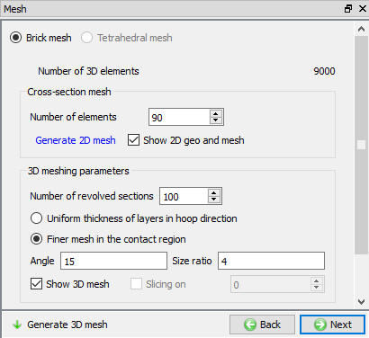
Workpiece Mesh Page
In material page, user can load the material using Import Material data from a file  or Using Load form Library option
or Using Load form Library option  , see Fig. 48.2.11. Once the material is loaded user can select the material to be used for respective object. User can also create new
material if the material is not available in DEFORM library using
, see Fig. 48.2.11. Once the material is loaded user can select the material to be used for respective object. User can also create new
material if the material is not available in DEFORM library using  . User can delete the material from list using
. User can delete the material from list using  or edit
the material data using . Modified / newly defined Material can be saved using
or edit
the material data using . Modified / newly defined Material can be saved using  ,
,  .
.
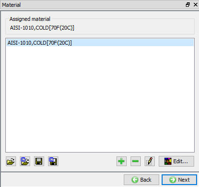
Assigning material to workpiece
In Boundary conditions page, user can assign various boundary constraints to an object. Boundary conditions specify how the boundary of an object interacts with other objects and with the environment. Commonly used boundary conditions are heat exchange with the environment for simulations involving heat transfer and Contact between objects in the model. Depending on the “Process” selection and “Simulation setup”, system generates default BCC for non-isothermal process and with contacting objects. Fig. 48.2.12. shows various BCC that can be assigned to an object. For more information please go through the 14. Boundary Conditions.
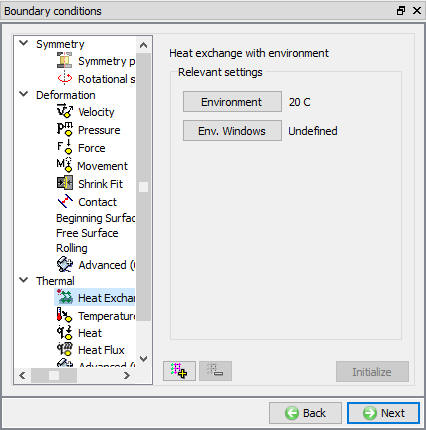
Workpiece BCC Page
Mandrel is a very important object in Floe forming as the material flows along the Mandrel surface taking the shape of the mandrel. Mandrel can be simple cylinder or may have some profile. Mandrel object type is “Rigid”. In Mandrel object page user
can define the Object name and temperature. The user can import object from other databases or key files using  and
and  options or save the object data using
options or save the object data using  and
and  options.
options.
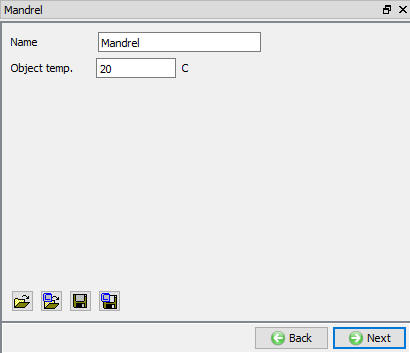
Mandrel Object Page
2D cross-section for Mandrel can be defined similar to the workpiece 2D Cross-section as explained in 48.2.5.1. Defining Workpiece 2D cross-section. User can define the 2D Cross-section which will be used to generate 3D Geometry.
User need to generate 3D geometry for all objects in Flow forming operation setup. Flow forming/ Spinning operation uses 2D Cross-section to generate 3D by revolving about defined axis and center at Workpiece object page. After defining the digitalization options, Number of revolved sections and Finer geometry in contact region user need to click on button to create a 3D geometry as shown in the Fig. 48.2.14.
Digitization: “Length tolerance fraction”/ “Maximum allowable angle”/ “Minimum allowable angle” can be used to control digitization points on the 2D cross-section for accurate representation of 2D Cross-section, see Fig. 48.2.14.
Number of revolved sections: User can define number of layers in the hoop direction while generating 3D Geometry from 2D cross-section.
Fine Geometry in Contact Region: User can turn on this check box if user need to generate Finer 3D geometry at contact with workpiece to improve contact calculations. User can define the value of “Angle” at contact and “Size ratio” for finer mesh.
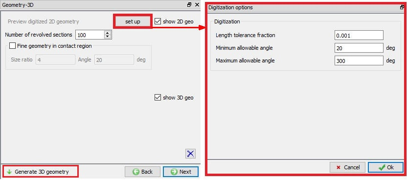
3D geometry generation page
If user wants to perform thermal calculations in a Non-isothermal simulation setup then user can generate mesh for mandrel. Mesh settings and Mesh generating procedure is similar to 48.5.2. Generating Workpiece Mesh.
User can assign the material from the list on load from Library similar to 48.2.5.3. Defining Workpiece Material.
Depending on the “Simulation setup” and “Solver” selection system generates BCC automatically. “Heat exchange with Environment” and “Contact” BCC are commonly used BCC, for more information refer 14. BCC Controls.
User can define reference point for mandrel and position the mandrel with respect to DEFORM origin along X-axis. The system will display calculated value of D from DEFORM origin using the present position of mandrel as shown in Fig. 48.2.15. “D” is the distance between the Deform Origin and the origin of the Mandrel along X axis and will be used to position the mandrel.
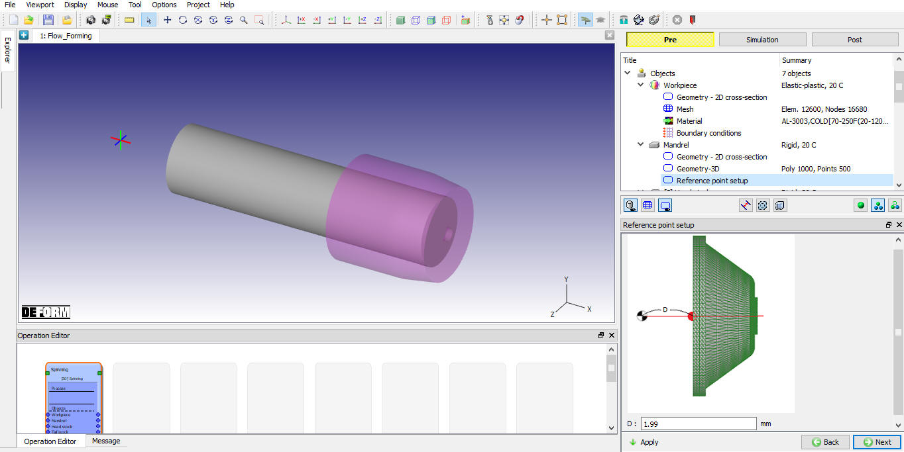
Reference Point Setup Page
Each Roll must be defined separately. Rolls are of Rigid Object types and can be meshed if thermal calculations need to be performed in non-isothermal simulation setup. In roll’s object page user can define the Object name and temperature. User can
import roll’s object from other databases or key files using  and
and  options or save the object data using
options or save the object data using  and
and  options.
options.
Roll geometry, Mesh (in case of non-isothermal setup), Material and BCC can be defined similar to methodology as explained in 48.2.5.1. Defining Workpiece 2D cross-section, 48.2.6.2. Generating Mandrel 3D Geometry, 48.2.5.3. Defining Workpiece Material and 48.2.5.4. Defining Workpiece BCC.
In Flow forming operation rolls require a unique setup approach due to their use of the path movement control. Roll translation will be defined by a path that is applied in a local UV (axial/radial) coordinate system. A single point on the roll, the reference point (datum), will follow this path. The current location of the reference point, and thus the roll, is determined by the path data and the current time. Each roll following a path must have a reference point defined for it.
User can select the Roll datum point using the button  next to Roll Datum field (See Fig. 48.2.16.)
which will provide options of “Rotation center”, “Nose center” and “Corner point” as shown in Fig. 48.2.16. to be used as “Roll
Datum point”, based on the selection the datum point co-ordinates are automatically calculated. User can also enter the datum co-ordinates manually. User can define the “Orientation Angle” with respect to X-axis as shown in Fig. 48.2.17.
next to Roll Datum field (See Fig. 48.2.16.)
which will provide options of “Rotation center”, “Nose center” and “Corner point” as shown in Fig. 48.2.16. to be used as “Roll
Datum point”, based on the selection the datum point co-ordinates are automatically calculated. User can also enter the datum co-ordinates manually. User can define the “Orientation Angle” with respect to X-axis as shown in Fig. 48.2.17.
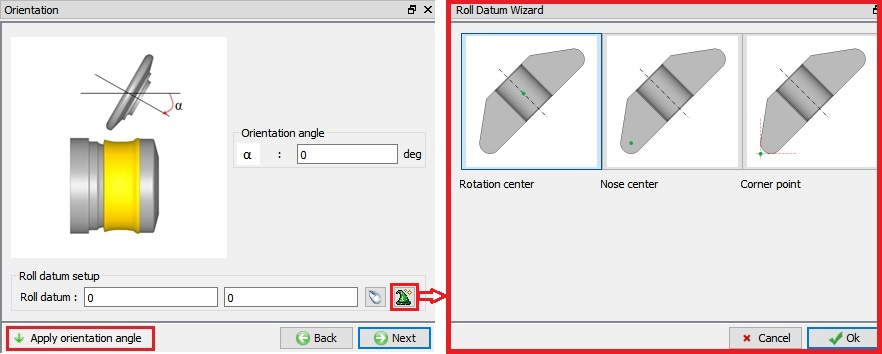
Roll Orientation Page – Roll Datum Wizard
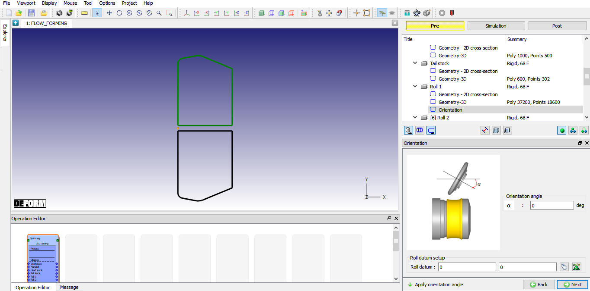
Roll Orientation Page – Orientation Angle
Flow forming process may involve single pass or multiple passes, user can define the multi pass and multi roll movement data using “Pass Table” as shown in the Fig. 48.2.18. When we click on the button we will get the Roll movement controls as shown in the Fig. 48.2.19. The user can define the Translation movement using the Speed and Path type. For the Rotation movement we have Angular velocity and Torque type.
“Path” type translation movement is commonly used in flow forming process. For more information on how to define “Path” type movement please refer 15. Movement controls. After defining the path movement data user can use the to display the path that roller datum is going to trace in 2D as shown in the Fig. 48.2.20.
User can also define other data in pass table as explained below,
Process duration: We can define the process duration value as the stopping criteria to stop the defined Pass simulation.
Roll Friction: We can define the friction coefficient value between roll and workpiece. This friction co-efficient value is applied between only roll and workpiece, user can modify this value at contact page if required.
Roll Heat transfer coeff.: We can define the Heat transfer coefficient value between roll and workpiece. This Heat transfer co-efficient value is applied between only roll and workpiece; user can modify this value at contact page if required.
Dwell time: For all passes, we can use “Dwell time” in pass table to specify the time between end of current selected pass and next pass.
Dwell temperature: We can use “Dwell temp.” in pass table to specify the environment temperature during Dwell time.
Convection Coeff. : We can use “Convection Coeff.” in pass table to specify the Convection coeffecient value during Dwell time.
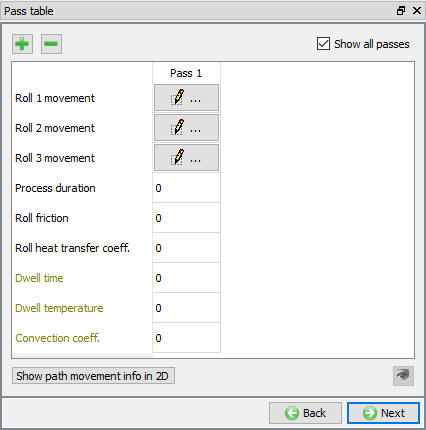
Pass Table Page
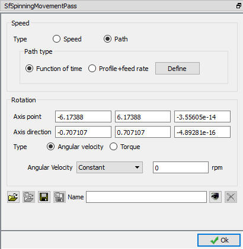
Roll Movement Controls
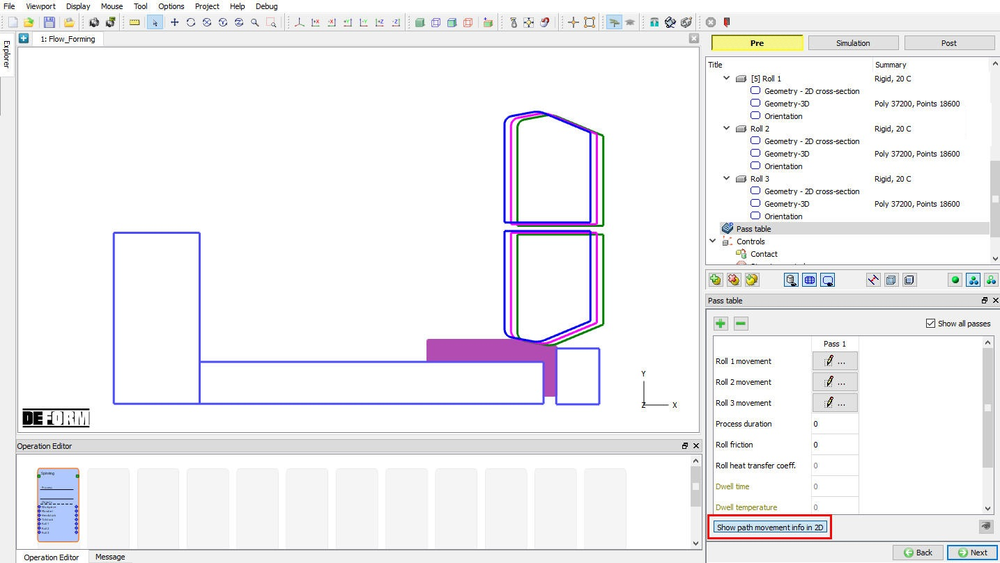
Path movement info in 2D
Objects positioning can be varied using “Automatic Positioning” and “Advanced Object Positioning” options available in “Controls” page as shown in Fig. 48.2.21.
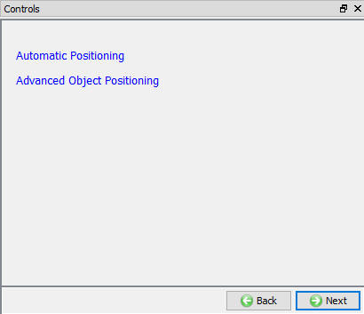
Controls Page
In Flow Forming the Automatic positioning can be done by defining the respective values as shown in the Fig. 48.2.22.
D = Distance between
head stock / origin and First roll (X)
K = Rolls inclination angle with respect to X-axis
A = Distance along X-axis from First roll (X) and other rolls
After defining the values, the rolls are positioned as per defined parameter values,
see Fig. 48.2.23.
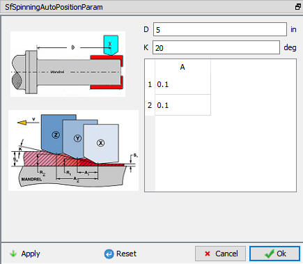
Automatic Positioning options
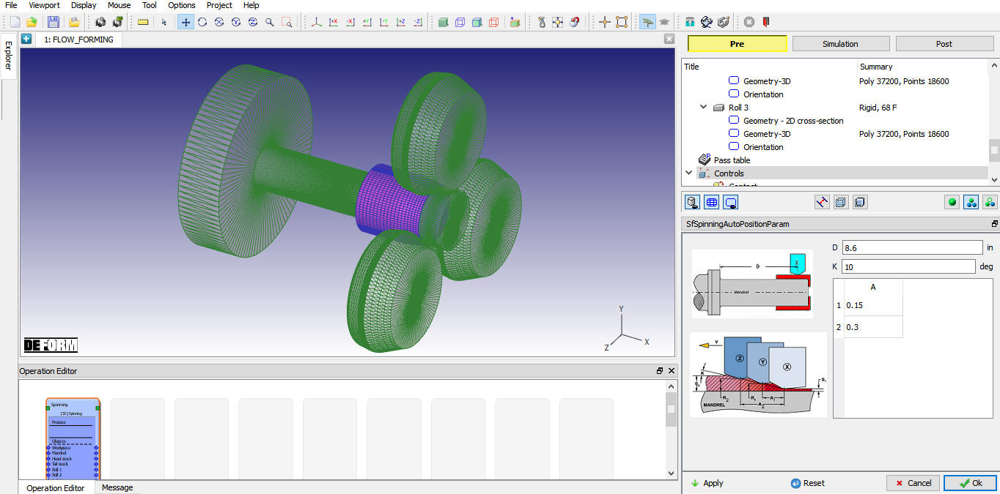
Automatic positioning for the Flow forming setup
If user wants to modify any of the objects position, then user can use Advanced object position button in control page. Various positioning options are available to position the objects as shown in Fig. 48.2.24., for more information on these options please refer 19. Object Positioning.
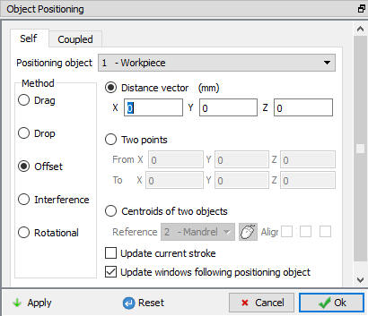
Advanced Object Positioning options
The user can define the contact between the Workpiece and other roll objects by defining the inter object relations. For Flow forming operation, we will use the sticking conditions for Workpiece with Mandrel and Tail stock as shown in Fig. 48.2.25. User must define friction and Interface heat transfer co-efficient for non-isothermal rolling processes and friction value for isothermal rolling process.
System: By selecting this radio button, system assigns default inter-object relationships. Also, user can add the lubricants if necessary, by selecting Add New from pull down menu and clicking on  button or user can load the required lubricants from the library for the simulation.
button or user can load the required lubricants from the library for the simulation.
User: By default, user radio button will be selected for Flow forming operation. User can add relationships by clicking on  button as shown in Fig. 48.2.26. User can modify the value of each relation by selecting it and clicking on
button as shown in Fig. 48.2.26. User can modify the value of each relation by selecting it and clicking on  button. User can use
button. User can use  to assign same values to all relations. User can click on to calculate contact tolerance. User can click on
to assign same values to all relations. User can click on to calculate contact tolerance. User can click on  to generate contact relation. User can turn on check box next to
contact relation to define sticking contact.
to generate contact relation. User can turn on check box next to
contact relation to define sticking contact.
For more information please refer, 20. Inter-Object Relations.
Note: User can define Friction windows for rolls and mandrel as shown in Fig. 48.2.26. in ALE type of simulation setup to activate Lite Contact search which will reduce the contact search time.
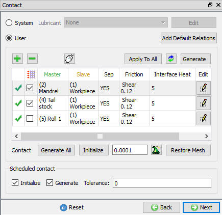
Contact Page
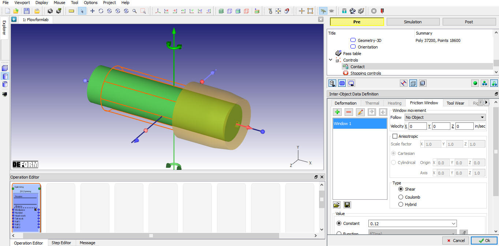
Defining Friction window
The user can define the process duration as the stopping criteria to stop the simulation as shown in the Fig. 48.2.27.
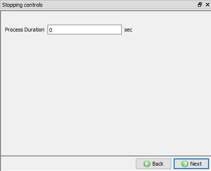
Stopping controls Page
The user can define the Step controls for simulation as shown in the Fig. 48.2.28.
Number of steps: Number of steps to be simulated can be defined here. Simulation can stop earlier due to stopping criteria, if heat transfer is defined in pass table then it continues with “Heat Transfer” operation. These “Number of steps” do not include transfer time, by default the transfer time will simulate 100 steps always.
Step increment: The step increment to save in the database controls the number of steps that the system will save in the database. When a simulation runs, every step must be computed, but does not necessarily need to be saved in the database. Storing more steps will preserve more information about the process, consequently it will require more storage space.
Time per Step: If time per step is specified, the time interval per step will be used. The die displacement per step will be the time step times the die velocity.
Stroke per Step: If stroke per step is specified, the primary die will move the specified amount in each time step. The total movement of the primary die will be the displacement per step multiplied by the total number of steps.
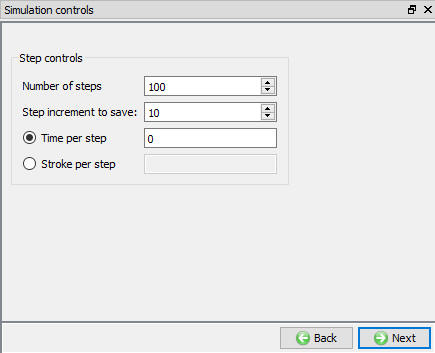
Simulation controls Page
Check Data  : When user clicks on this label system checks the Data. If Data is correct, then we can generate DB. If Data is correct, we can generate DB. But while
checking Data if it gives any errors or warnings then it should be corrected before generating Database. Errors will not allow the database to be generated while warnings will allow the DB to be generated.
: When user clicks on this label system checks the Data. If Data is correct, then we can generate DB. If Data is correct, we can generate DB. But while
checking Data if it gives any errors or warnings then it should be corrected before generating Database. Errors will not allow the database to be generated while warnings will allow the DB to be generated.
Generate Database  : User can generate database by clicking on this label (See Fig. 48.2.29.).
: User can generate database by clicking on this label (See Fig. 48.2.29.).
Append Key file: Any information that is not defined in the template but still applicable to the process can be loaded as .key file. This option is also useful in the cases where only few values needs to be changed then those values can be defined as .key file and stored in specified path. When necessary only values in .key file can be changed, and simulation can be resubmitted to study the effect of the change in parameters.
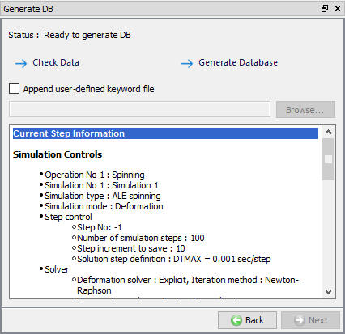
Generate DB page